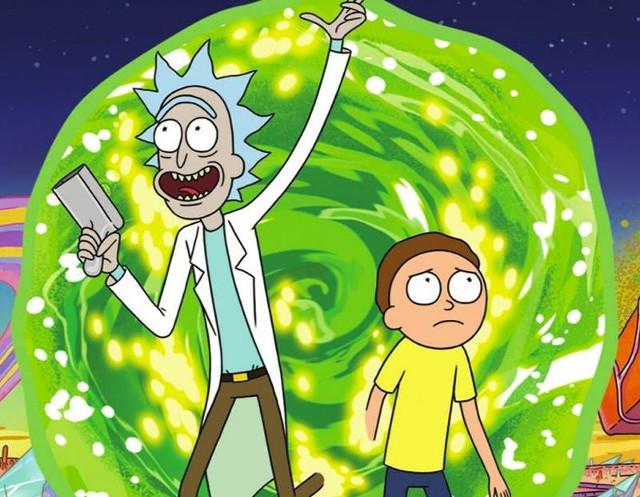
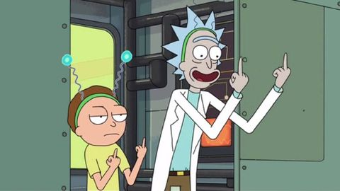
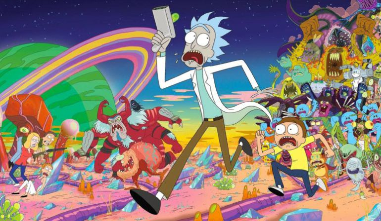

Rick y Morty es una serie de televisión estadounidense de animación para adultos creada por Justin Roiland y Dan Harmon para Adult Swim. La serie sigue las desventuras de un científico, Rick, y su fácilmente influenciable nieto, Morty, quienes pasan el tiempo entre la vida doméstica y los viajes espaciales intergalácticos. Roiland es el encargado de darle voz a los dos personajes principales, la serie también incluye las voces de Chris Parnell, Spencer Grammer, y Sarah Chalke.
Los orígenes de la serie pueden encontrarse en un cortometraje rudimentario animado por Roiland para el festival de cine Channel 101 llamado Doc and Mharti, una parodia de los principales protagonistas de Back to the Future. NBC despidió a Harmon por discusiones entre él y los ejecutivos de la serie Community, y entonces él y Roiland desarrollaron una serie basada en la película recientemente difundida. La serie ha sido aclamada universalmente por su originalidad, creatividad y humor.
Rick Sánchez es un ejemplo de típico "científico loco". Es un genio, pero es irresponsable, alcohólico, egoísta, un poco depresivo y claramente con poca cordura. Rick por diferentes razones termina mudándose a la casa de su hija Beth y en ese momento se encuentra con su nieto Morty; un joven de 14 años tímido y no muy listo. Al juntarse con su nieto, Rick y Morty vivirán una variedad de aventuras a lo largo del Cosmos y Universos paralelos. Y es mediante tantas vivencias y reflexiones que Rick busca que su nieto Morty no acabe como su padre, Jerry, un hombre muy poco exitoso que a pesar de tener buenas intenciones resulta ser bastante inútil en muchas ocasiones y depende mucho de su esposa, Beth, madre de Morty. A pesar de ser muy apegados, Rick y su nieto, experimentarán momentos en los que Summer, hermana de Morty, se unirá en ocasiones a las pintorescas aventuras provocadas por Rick.
Todos los episodios de Rick y Morty siguen la estructura básica que Harmon llama «Embrión de una Historia» 4. Esta se trata de un esquema circular dividido en 8 pasos: 1. Un personaje está en su zona de confort. 2. Pero quiere algo. 3. Entra en una situación no reconocida. 4. Se adapta a ello. 5. Consigue lo que quiere. 6. Pero paga un alto precio. 7. Vuelve a la situación de partida, cómoda. 8. Ha cambiado. Rick y Morty sigue este esquema pero adaptado a las series de televisión. 1. El protagonista. 2. Nota un pequeño problema. 3. Toma una decisión importante. 4. Esto provoca cambios. 5. Que dan satisfacción. 6. Pero hay consecuencias. 7. Que deben ser neutralizadas. 8. El protagonista debe admitir la futilidad del cambio.
